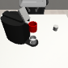

We aim to learn policies that generalize to novel viewpoints from widely available,
offline single-view RGB robotic trajectory data.
Abstract
Large-scale visuomotor policy learning is a promising approach toward developing generalizable manipulation systems. Yet, policies that can be deployed on diverse embodiments, environments, and observational modalities remain elusive. In this work, we investigate how knowledge from large-scale visual data of the world may be used to address one axis of variation for generalizable manipulation: observational viewpoint. Specifically, we study single-image novel view synthesis models, which learn 3D-aware scene-level priors by rendering images of the same scene from alternate camera viewpoints given a single input image. For practical application to diverse robotic data, these models must operate zero-shot, performing view synthesis on unseen tasks and environments. We empirically analyze view synthesis models within a simple data-augmentation scheme to understand their capabilities for learning viewpoint-invariant policies from single-viewpoint demonstration data. Upon evaluating the robustness of policies trained with our method to out-of-distribution camera viewpoints, we find that they outperform baselines in both simulated and real-world manipulation tasks.
Learning View-Invariance

Depiction of the data augmentation scheme that we study. Observations are replaced with viewpoint-augmented versions of the same scene with action labels held constant.
Example Augmented Dataset Trajectories
Below, we show examples of expert demonstration trajectories augmented by various novel view synthesis models. For ZeroNVS (finetuned), the model is finetuned on synthetic data from MimicGen tasks for simulated environments and on the DROID dataset for the real setting, qualitatively improving the fidelity of generated images and quantitatively improving downstream policy performance.
Please see the manuscript and appendix for more details about finetuning.
Coffee
Stack
Threading
Hammer
Cup on saucer (real)
Single original view


Depth est. + Reproj.


ZeroNVS

ZeroNVS (Finetuned)